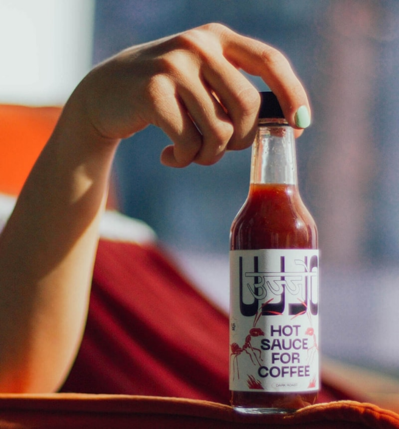
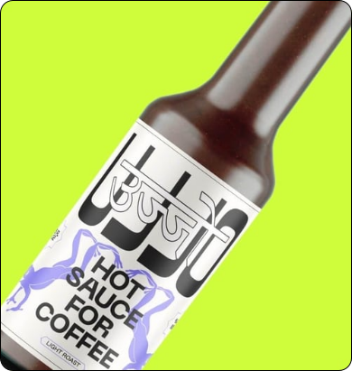
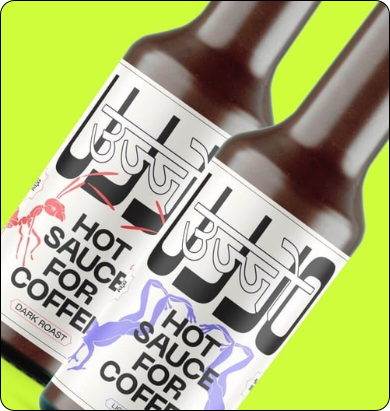

PUT SOME FIRE IN YOUR BELLY

THE FIRST HOT SAUCE MADE FOR COFFEE

THROW SOME LAVA IN YOUR JAVA


TANDY AND TINGLY
LIGHT ROAST BLEND

LIGHT & DARK ROAST
UJJO SAMPLER PACK

TANDY AND TINGLY
DARK ROAST BLEND
PUT SOME FIRE IN YOUR BELLY
THE STORY BEHIND THE SOUCE

HELLO, I’M LAUREN AND AS A LIFELONG ADVENTUROUS EATER, I’VE TRIED A LOT OF CRAZY THINGS, BUT I NEVER THOUGHT HOT SAUCE IN COFFEE WAS A SANE OPTION UNTIL A FRIEND DARED ME TO TRY IT.
AND IT SUCKED.
BUT I WONDERED IF THERE WAS A WAY TO ADD SPICE TO MY COFFEE. WHEN THERE WAS NO EASY SOLUTION, UJJO WAS BORN.
UJJO (OOO-JOE): THE WORD FOR “FIRE” IN KONKANI, SPOKEN ON THE WEST COAST OF INDIA, IS AN HOMAGE AND A LOVE LETTER TO MY DAD, AN INDIAN IMMIGRANT WHO INSTILLED A FIRE IN MY PALATE – AND MY HEART – FROM THE VERY BEGINNING.
PUT SOME FIRE IN YOUR BELLY